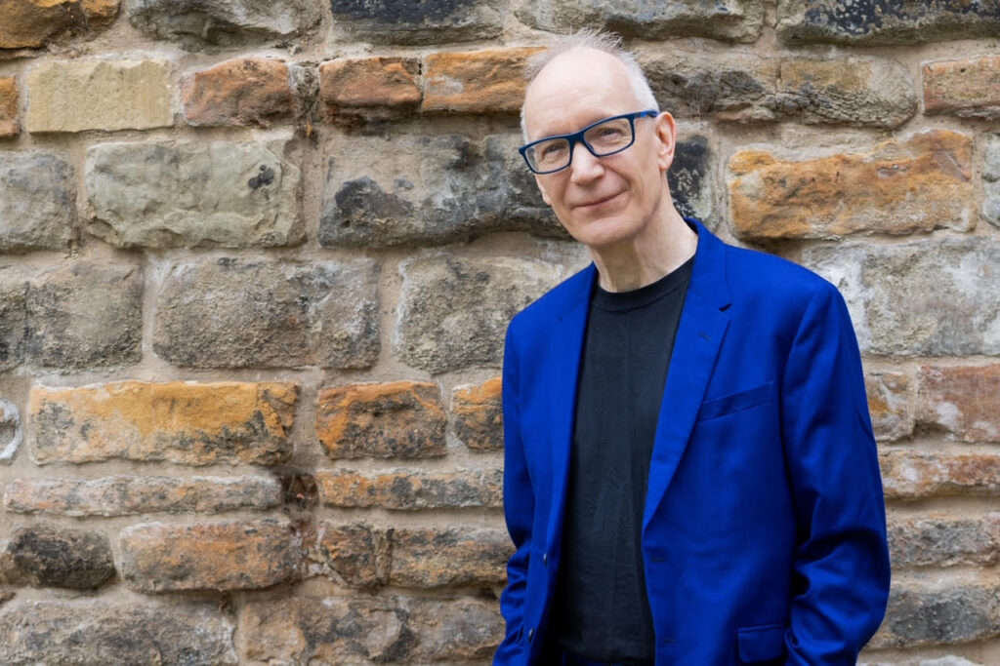
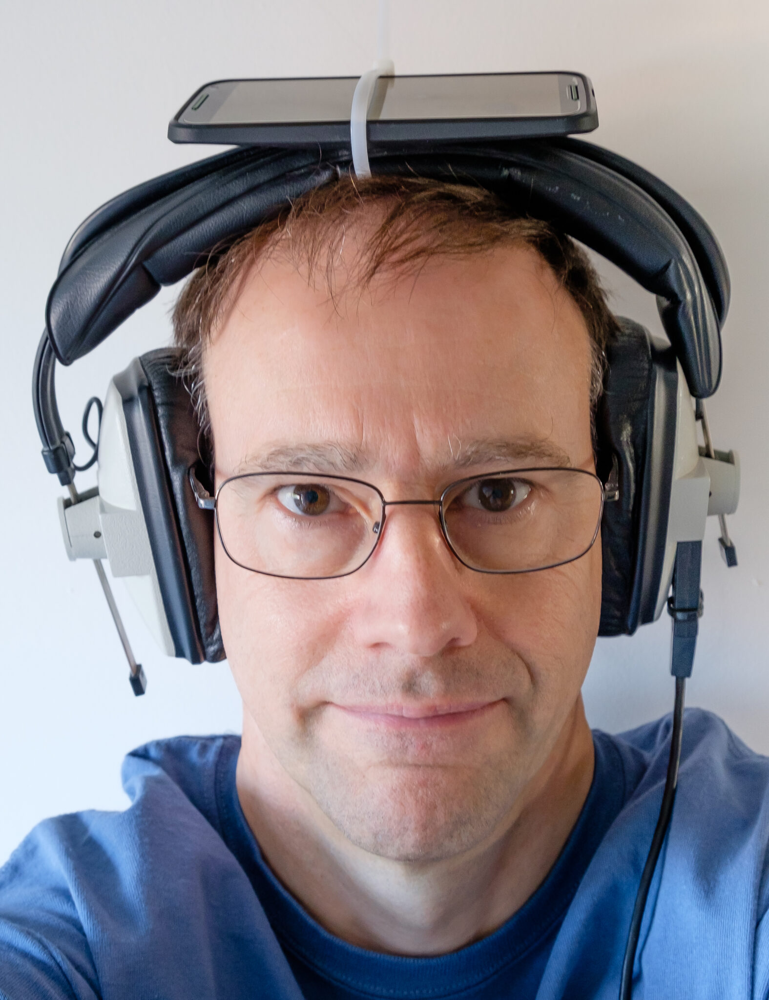

TechCon began as a small meetup of technology enthusiasts in 2010 and has grown into an international conference that brings together developers, designers, entrepreneurs, and thought leaders. Over the years, TechCon expanded from a single track of talks to a multi-day event with workshops, panels, and hands-on labs, placing a special emphasis on inclusive innovation and community-driven learning.
History
Mission
Our mission at TechCon is to foster a collaborative environment where technology professionals can share knowledge, inspire innovation, and build lasting connections. We are committed to promoting diversity and inclusion within the tech community, ensuring that voices from all backgrounds are heard and valued. Through our events, we aim to empower individuals to drive positive change in the world through technology.
Past Speakers
David Lloyd - Radio TechCon Host
Former commercial radio executive turned radio consultant, historian and broadcaster, David has been in radio for over forty years, running stations of all formats from Galaxy to Century, LBC to Virgin.
Rupert Brun
Rupert is very old and has therefore filled many roles, including Senior Engineer Radiophonic Workshop, Senior Engineer Maida Vale and Head of Technology for Audio at the BBC.
Hend ElGhazaly

Hend ElGhazaly is a PhD student in the Speech and Hearing group at the University of Sheffield’s School of Computer Science, under the supervision of Professor Heidi Christensen and Dr. Nafise Sadat Moosavi.